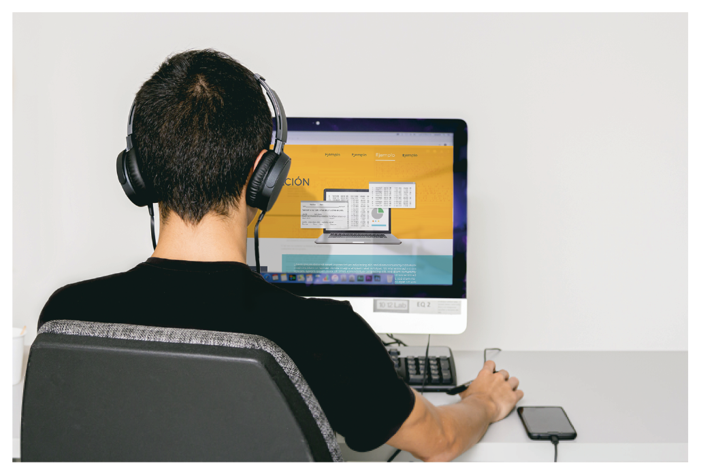

Presentación del curso
- Justificación
-

Con este curso, enfocado en los conceptos básicos del lenguaje de programación ABAP, se espera que los estudiantes afiancen conocimientos y se familiaricen con este nuevo entorno tecnológico que deviene con el software SAP. Adicionalmente, se aspira a que estén preparados para continuar con el proceso de formación ABAP y, posteriormente, con la certificación SAP, los cuales se realizarán en las instalaciones de Perceptio de manera presencial.
Este curso virtual es una plataforma de lanzamiento profesional que abre las puertas del mundo laboral a sus estudiantes. Es el punto de partida para obtener todo el espectro de conocimiento ABAP y la vinculación directa a SAP mediante la certificación oficial. Este curso permitirá que los estudiantes obtengan una preparación más balanceada, lo que hará que su rendimiento para la empresa sea mejor.
La experiencia de cohortes anteriores permite asegurar que las personas que han recorrido este camino, avalan con satisfacción sus resultados a nivel de posicionamiento en el mercado laboral y desde la mejora salarial, lo cual ha impactado sus vidas de forma positiva en el ámbito personal y profesional.
- Objetivos de aprendizaje
-
Objetivo general
Enseñar los conceptos básicos del lenguaje de programación ABAP mediante un curso virtual en el cual los estudiantes se preparen para continuar el proceso de certificación SAP con nuestra empresa Perceptio.
Objetivos específicos
- Mostrar la ruta y el material específico para lograr la certificación SAP.
- Explicar la arquitectura, las tecnologías de comunicación, la integración y la navegación en SAP.
- Explicar el significado de una transacción y las variables del sistema disponibles durante la ejecución.
- Enseñar el diccionario de datos, sus elementos y su alcance en un sistema SAP.
- Enunciar los tipos de programas disponibles y hacer énfasis en el programa ejecutable (Tipo 1).
- Enseñar las sentencias Open SQL y su aplicación en operaciones con bases de datos.
- Esquema de contenidos
-
Los temas que se abordarán en este curso son:
Introducción a la programación ABAP
Arquitectura- ¿Opciones de instalación para un servidor SAP?
- ¿Qué son las capas en la Arquitectura SAP?
- ¿Cómo funcionan los procesos de trabajo?
Navegación- ¿Cómo se navega por el sistema SAP?
- ¿Cuáles son los elementos comunes de una pantalla SAP?
- ¿Qué ayudas del sistema tengo disponibles?
Diccionario ABAP- ¿Qué es el diccionario y cuáles son sus ventajas?
- ¿Qué es una tabla?
- ¿Qué es un elemento de datos?
- ¿Qué es un dominio?
- ¿Qué es una estructura?
Tipos de programas- ¿Cuáles son los tipos de programas ABAP?
- ¿Cómo crear un programa ABAP?
- ¿Qué eventos tiene un programa?
- ¿Cómo puedo crear una pantalla con sentencias ABAP?
- ¿Cómo activar programas ABAP?
Open SQL- ¿Qué es OPEN SQL?
- ¿Cuáles son las sentencias OPEN SQL?